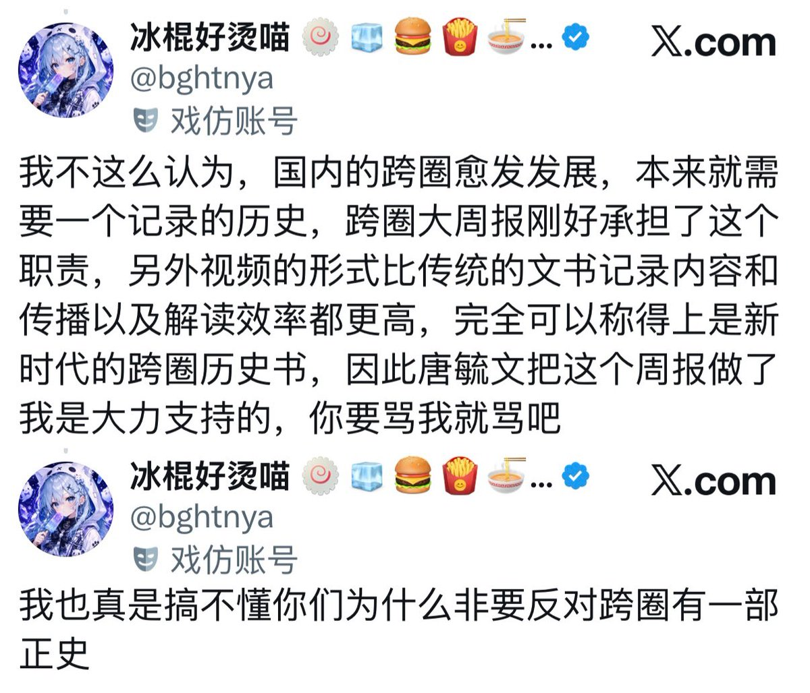

璋🏳️⚧️
@10Lystra
@KitsuMio7 受众不就是带着猎奇心理来的顺直。。

橘川澪KitsuMio🏳️⚧️🍥
@KitsuMio7
唐毓文做跨圈大周报的思路就是挑最有乐子、最逆天、最猎奇的讲。
觉得这个能当跨圈正史的也是神人了。
况且中推跨圈本身其实也啥值得记录的“历史”，除了内斗还是内斗，要么就是各类逆天事迹和恶劣事件。
剩下的都是一些十分稀松平常没有记录价值的事情，比如这个人 HRT 了，那个人出柜了。 https://t.co/1vgOWCYL1k